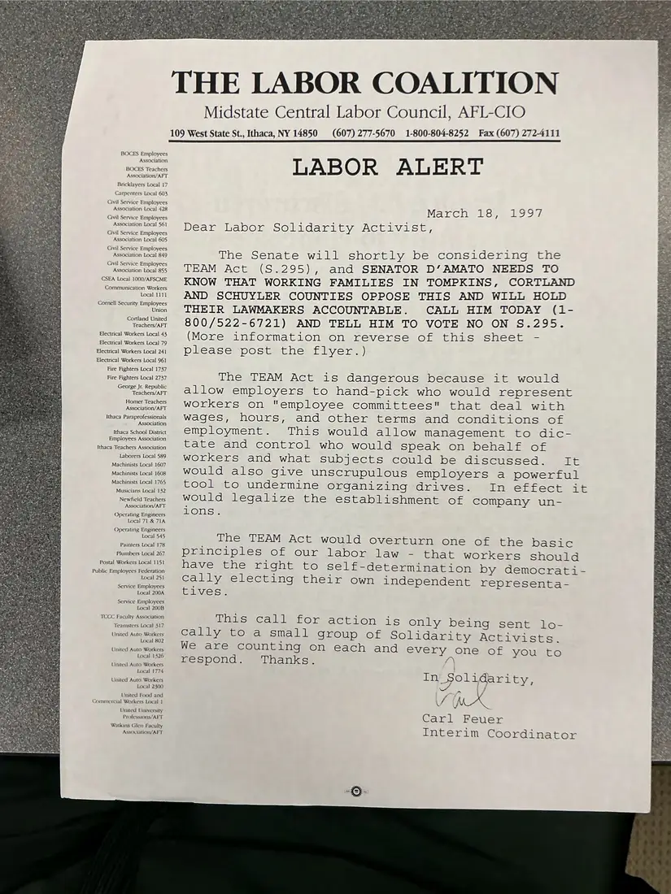
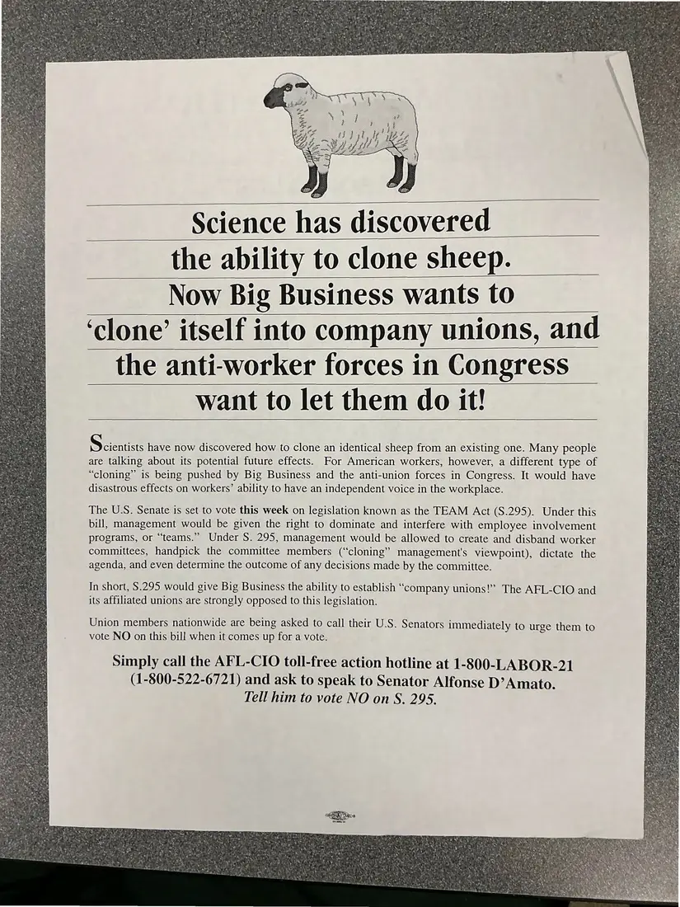

Flyer, 2 pages
LABOR ALERT on the TEAM Act (S. 295), with “clone sheep” flyer
March 18, 1997
An urgent letter to solidarity activists asking them to call Senator D'Amato to oppose the TEAM Act, which labor argued would legalize company unions. The reverse is an AFL-CIO flyer: “Science has discovered the ability to clone sheep. Now Big Business wants to ‘clone’ itself into company unions.”
Download or cite this itemPages


(open zoom view)Read the page text (machine-read, mostly readable)
This text was generated automatically from the photograph and has not been corrected. The image is the authoritative record.
BOCES Employees Association BOCES Teachers Association/AFT Bricklayers Local 17 Carpenters Local 603 Civil Service Employces Association Local 428 Civil Service Employees Association Local $61 Civil Service Employees Association Local 605 Civil Service Employees Association Local 849 Civil Service Employees Association Local 855 CSEA Local 1000/AFSCME Communication Workers Local 1111 Cornell Security Employees Union Cortland United Teachers/AFT Electrical Workers Local 43 Electrical Workers Local 79 Electrical Workers Local 241 Electrical Workers Local 961 Fire Fighters Local 1737 Fire Fighters Local 2737 George Jr. Republic Teachers/AFT Homer Teachers Association/AFT Ithaca Paraprofessionals Association Ithaca School District Employees Association Ithaca Teachers Association Laborers Local 589 Machinists Local 1607 Machinists Local 1608 Machinists Local 1765 Musicians Local 132 Newfield Teachers Association/AFT Operating Engineers Local 71 & 71A Operating Engineers Local 545 Paimters Local 178 Plumbers Local 267 Postal Workers Local 1151 Public Employees Federation Local 251 Service Employees Local 200A Service Employees Local 200B TGCC Faculty Association ‘Teamsters Local 317 United Auto Workers Local 802 United Auto Workers Local 1326 United Auto Workers Local 1774 United Auto Workers Local 2300 United Food and Commercial Workers Local 1 United University Professions/AFT Watkins Glen Faculty Association/AFT 109 West State St., Ithaca, NY 14850 LABOR ALERT THE LABOR COALITION Midstate Central Labor Council, AFL-CIO (607) 277-5670 1-800-804-8252 Fax (607) 272-4111 March 18, 1997 Dear Labor Solidarity Activist, The Senate will shortly be considering the TEAM Act (S.295), and SENATOR D’AMATO NEEDS TO KNOW THAT WORKING FAMILIES IN TOMPKINS, CORTLAND AND SCHUYLER COUNTIES OPPOSE THIS AND WILL HOLD THEIR LAWMAKERS ACCOUNTABLE. CALL HIM TODAY (1- 800/522-6721) AND TELL HIM TO VOTE NO ON S.295. (More information on reverse of this sheet - please post the flyer.) The TEAM Act is dangerous because it would allow employers to hand-pick who would represent workers on "employee committees" that deal with wages, hours, and other terms and conditions of employment. This would allow management to dic- tate and control who would speak on behalf of workers and what subjects could be discussed. It would also give unscrupulous employers a powerful tool to undermine organizing drives. In effect it would legalize the establishment of company un- ions. The TEAM Act would overturn one of the basic principles of our labor law - that workers should have the right to self-determination by democrati- Cally electing their own independent representa- tives. This call for action is only being sent lo- cally to a small group of Solidarity Activists. We are counting on each and Every one of you to respond. Thanks. 2 In Solidarity, V (A Carl Feuer Interim Coordinator


(open zoom view)Read the page text (machine-read, mostly readable)
This text was generated automatically from the photograph and has not been corrected. The image is the authoritative record.
Science has discovered the ability to clone sheep. Now Big Business wants to ‘clone’ itself into company unions, and the anti-worker forces in Congress want to let them do it! SWE have now discovered how to clone an identical sheep from an existing one. Many people are talking about its potential future effects. For American workers, however, a different type of “cloning” is being pushed by Big Business and the anti-union forces in Congress. It would have disastrous effects on workers’ ability to have an independent voice in the workplace. The U.S. Senate is set to vote this week on legislation known as the TEAM Act (S.295). Under this bill, management would be given the right to dominate and interfere with employee involvement programs, or “teams.” Under S. 295, management would be allowed to create and disband worker committees, handpick the committee members (“cloning” management's viewpoint), dictate the agenda, and even determine the outcome of any decisions made by the committee. In short, S.295 would give Big Business the ability to establish “company unions!’ The AFL-CIO and its affiliated unions are strongly opposed to this legislation. Union members nationwide are being asked to call their U.S. Senators immediately to urge them to vote NO on this bill when it comes up for a vote. Simply call the AFL-CIO toll-free action hotline at 1-800-LABOR-21 (1-800-522-6721) and ask to speak to Senator Alfonse D’Amato. Tell him to vote NO on S. 295.
See something wrong, or recognize a person or event? Send a correction. If you hold rights in this item or think it should not be public, write to the same address.